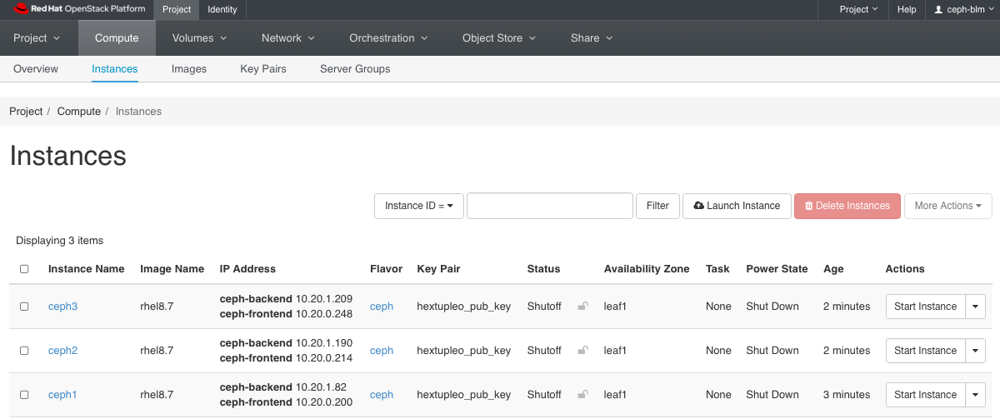

Ceph v6.x Installation
Introduction
Goals:
- Enable field on Ceph v6.0
- Test basics features work (no regression)
- Test new selected set of features
- Optionally test tech preview features
- Report product and documentation bugs
- Send valuable feedback to Ceph Product management and engineering teams at IBM
- Convert the work accomplished into lab training guides in order to enable more folks in the field
- Have fun with Ceph
- Get to work with and get to know each other.
HextupleO
The lab access will be provided in the form of nested virtualization managed by RHOSP 17.1. We have limited resources available, but there should be enough room for about 20 virtual environments.
Standard roles have been pre-defined, but since we are using OpenStack to manage it, we are capable of being flexible, with resizing flavors, snapshotting, adding more cinder volumes to ceph nodes or even adding more networks via either OpenStack CLI Horizon or Cloudforms.
| Role | vRAM | vCPU | vNIC | Disk |
|---|---|---|---|---|
| Ceph | 32G | 8 |
|
|
Building Your KNI Lab
Default Configuration
-
To build your environment, please ensure you are connected to the NA-SSA VPN first.
-
Access RHAAP via link - NA-SSA Ansible Automation Platform.
-
Select Templates in the left pane; click the rocket icon in the Action column to the right of Deploy Ceph Storage Cluster.
-
Update the project_name and project_password parameters. The project name and password are used to access your environment via CLI and the Horizon GUI. Choose a password you will remember.

-
Wait the deployment to finish which can take up to ~10-15 minutes.
Customized Deployment
-
To build your environment, please ensure you are connected to NA-SSA VPN.
-
Access RHAAP via link - NA-SSA Ansible Automation Platform.
-
Go to Templates tab and hit the “rocket” icon next to - Hextupleo - create project.
-
Update the Project Name and Password fields. The project name and password are used to access your environment via CLI and the Horizon GUI. Choose a password you will remember.
-
Go to Templates tab and hit the “rocket” icon next to - “Hextupleo - create networks”. In hexo4 you are encouraged to experiment with different settings. However if you’d like to start with the known network configuration the default templates should be fine. Update the project_name and project_password along with the networks to just include the ones below. Click Next, verify the configuration and click Launch. Monitor the progress of the job executing in the output.
-
Go to Templates tab and hit the “rocket” icon next to - “Hextupleo - create instances”. Below is a good starting config with 3 ceph nodes. Update the project_name and project_password along with the instances to just include the ones below. Click Next, verify the configuration and click Launch. Monitor the progress of the job executing in the output.
instances: - { name: "ceph1", image: "rhel8.7", flavor: "ceph", ipmi: "False", extra_volume_size: "100", net_name1: "ceph-frontend", net_name2: "ceph-backend", net_name3: "", net_name4: "", net_name5: "", net_name6: "", net_name7: "",net_name8: "" } - { name: "ceph2", image: "rhel8.7", flavor: "ceph", ipmi: "False", extra_volume_size: "100", net_name1: "ceph-frontend", net_name2: "ceph-backend", net_name3: "", net_name4: "", net_name5: "", net_name6: "", net_name7: "",net_name8: "" } - { name: "ceph3", image: "rhel8.7", flavor: "ceph", ipmi: "False", extra_volume_size: "100", net_name1: "ceph-frontend", net_name2: "ceph-backend", net_name3: "", net_name4: "", net_name5: "", net_name6: "", net_name7: "",net_name8: "" }
Accessing Your Project in Horizon
Horizon
-
Using the project name as the username and password that you specified when you launched your job, log into the Horizon Dashboard with this link:
-
Go to the Compute->Instances tab and make sure all of your requested nodes have been created. Take note of the IP addresses for the VLAN1117 network. You will use the 172.20.17.X addresses to access the servers.

-
Start each instance; In the Actions colume, select Start Instance for each node in the cluster.
-
Go to Network->Network Topology and get familiar with how the VMs are connected on the networks.
INFO: We have created Tenant (overlay) networks to satisfy all the non-routable networks.
To access your instance, ssh as the cloud-user using the VLAN IP addresses. Make sure you are connected to the NA-SSA VPN.
Ceph v6. Installation
The full Red Hat documentation for the Ceph installation is available here. The below precedures are for the OpenInfra Lab environment and have been scaled down to only include the required steps.
Prerequisites
- Red Hat Enterprise Linux 9.2 EUS or later.
- Ansible 2.9 or later.
- Valid Red Hat subsription with the appropriate entitlements.
- Root-level access to all nodes.
- An active Red Hat Network or service account to access the Red Hat Registry.
NOTE: Ensure that you are connected to the NA-SSA VPN
-
Login to ceph01. Update the /etc/hosts files with the IP and names.
NOTE: Your IP address will be different.
ssh cloud-user@ceph01 $ vi /etc/hosts 127.0.0.1 localhost localhost.localdomain localhost4 localhost4.localdomain4 ::1 localhost localhost.localdomain localhost6 localhost6.localdomain6 172.20.17.40 ceph01 172.20.17.120 ceph02 172.20.17.191 ceph03 10.40.0.190 ceph01-stg 10.40.0.125 ceph02-stg 10.40.0.245 ceph03-stg -
Grab the rhel9 repository file from the DNS Utility server
$ sudo curl http://172.20.129.10/hextupleo-repo/rhel9.repo -o /etc/yum.repos.d/rhel8.repo % Total % Received % Xferd Average Speed Time Time Time Current Dload Upload Total Spent Left Speed 100 1379 100 1379 0 0 269k 0 --:--:-- --:--:-- --:--:-- 448k [cloud-user@ceph1 ~]$ cat /etc/yum.repos.d/rhel9.repo [rhel-9-for-x86_64-highavailability-rpms] name=rhel-9-for-x86_64-highavailability-rpms baseurl=http://172.20.129.13/repos/rhel-9-for-x86_64-highavailability-rpms/ enabled=1 gpgcheck=0 ... [rhceph-6-tools-for-rhel-9-x86_64-rpms] name=rhceph-6-tools-for-rhel-9-x86_64-rpms baseurl=http://172.20.129.13/repos/rhceph-6-tools-for-rhel-9-x86_64-rpms/ enabled=1 gpgcheck=0 -
Update all packages using dnf on all servers.
$ cat /etc/redhat-release Red Hat Enterprise Linux release 9.1 (Plow) $ sudo dnf update -y ... Installed: ansible-collection-ansible-posix-1.2.0-1.3.el9ost.noarch ansible-collection-community-general-4.0.0-1.1.el9ost.noarch ansible-core-2.14.2-5.el9_2.x86_64 cephadm-ansible-2.15.0-1.el9cp.noarch git-core-2.39.3-1.el9_2.x86_64 libnsl2-2.0.0-1.el9.x86_64 mpdecimal-2.5.1-3.el9.x86_64 python3.11-3.11.2-2.el9_2.1.x86_64 python3.11-cffi-1.15.1-1.el9.x86_64 python3.11-cryptography-37.0.2-5.el9.x86_64 python3.11-libs-3.11.2-2.el9_2.1.x86_64 python3.11-pip-wheel-22.3.1-2.el9.noarch python3.11-ply-3.11-1.el9.noarch python3.11-pycparser-2.20-1.el9.noarch python3.11-pyyaml-6.0-1.el9.x86_64 python3.11-setuptools-wheel-65.5.1-2.el9.noarch python3.11-six-1.16.0-1.el9.noarch sshpass-1.09-4.el9.x86_64 Complete! ... $ sudo reboot Connection to 172.20.17.117 closed by remote host. Connection to 172.20.17.117 closed.NOTE: Don't forget to do all servers in the cluster.
-
Generate the ssh key files for the root user on ceph01. Update the authorized_keys file on all nodes and append the contents of the id_rsa.pub file.
-
Install the cephadm-ansible package on ceph01 (or the first node in the cluster).
-
Create the inventory hosts and registry-login.json files on ceph01. Change the permissions on the registry-login.json file.
$ cd /usr/share/cephadm-ansible $ vi hosts ceph1 ceph2 ceph3 [admin] ceph1 $ sudo mkdir /root/ceph $ sudo vi /root/ceph/registry.json { "url":"registry.redhat.io", "username":"myuser1", "password":"mypassword1" } $ sudo chmod 600 registry.jsonNOTE: The user name is the user name that you use to login to registry.redhat.io. This is used to download the ceph containers.
Installation
-
Run the Ceph ansible preflight playbook.
# sudo -i # ansible-playbook -i hosts cephadm-preflight.yml --extra-vars "ceph_origin=custom" -e "custom_repo_url=http://172.20.129.13/repos/rhceph-6-tools-for-rhel-9-x86_64-rpms/"NOTE: Use the custom_repo_url when for a disconnected installation.
-
Create the bootstrap configuration file on ceph01 (or first node in the cluster).
service_type: host addr: ceph01 hostname: ceph01 --- service_type: host addr: ceph02 hostname: ceph02 --- service_type: host addr: ceph03 hostname: ceph03 --- service_type: host addr: ceph04 hostname: ceph04 --- service_type: mon placement: host_pattern: "ceph0[1-3]" --- service_type: osd service_id: initial_osds placement: host_pattern: "ceph0[1-3]" data_devices: paths: - /dev/vdb -
Run the cephadm bootstrap command.
-
Once the bootstrap is complete, check the status of the cluster with the
ceph statuscommand. -
If firewalld is enabled, ensure the following ports are opened on all nodes that run the
MONand/orOSDservice:MON:
# firewall-cmd --zone-public --add-port=6789/tcp # firewall-cmd --zone-public --add-port=6789/tcp --permanentOr use the service name:
# firewall-cmd --zone-public --add-service=ceph-mon # firewall-cmd --zone-public --add-service=ceph-mon --permanentOSD:
# firewall-cmd --zone-public --add-port=6800-7300/tcp # firewall-cmd --zone-public --add-port=6800-7300/tcp --permanentOr use the service name:
-
Ensure the MTU size is set to 9000 on the network interfaces.
-
Set the labels for the servers.
# ceph orch host ls
HOST ADDR LABELS STATUS
cephstorage01 172.20.0.11 _admin mon mgr grafana
cephstorage02 172.20.0.12 mon mgr rgw _admin
cephstorage03 172.20.0.13 mon mgr rgw
cephstorage04 172.20.0.14 mon mgr rgw
cephstorage05 172.20.0.15
cephstorage06 172.20.0.16
6 hosts in cluster
# ceph orch host label add cephstorage01 mgr
Note: Labels can be mon, mgr, rgw, admin, or whatever you choose.